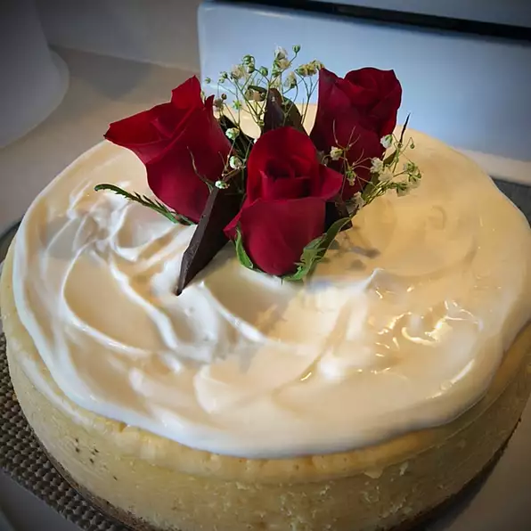

Cheesecake

Description
Simple and creamy New York style cheesecake
Ingredients
- 1½ cups graham cracker crumbs
- ½ cup white sugar
- ¼ cup butter, melted
- 5 (8 ounce) packages cream cheese, softened
- 5 eggs
- 2 egg yolks
- 1¾ cups white sugar
- ⅛ cup all-purpose flour
- ¼ cup heavy whipping cream
Steps
- Preheat oven to 400 degrees F (200 degrees C).
- Mix the graham cracker crumbs, 1/2 cup of the white sugar, and the melted butter together. Press mixture into the bottom of one 9 or 10 inch springform pan.
- In a large bowl, combine cream cheese, eggs and egg yolks; mix until smooth. Add the remaining 1 3/4 cups white sugar, the flour and the heavy cream. Blend until smooth. Pour batter into prepared pan.
- Bake at 400 degrees F (200 degrees C) for 10 minutes, then turn oven temperature down to 200 degrees F (100 degrees C) and continue baking for 1 hour, or until filling is set. Let cheesecake cool, then refrigerate.